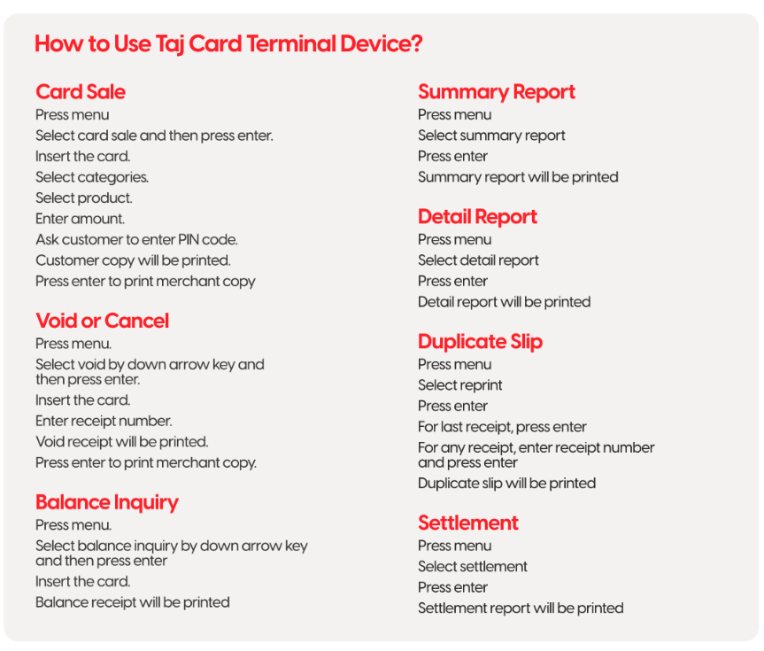
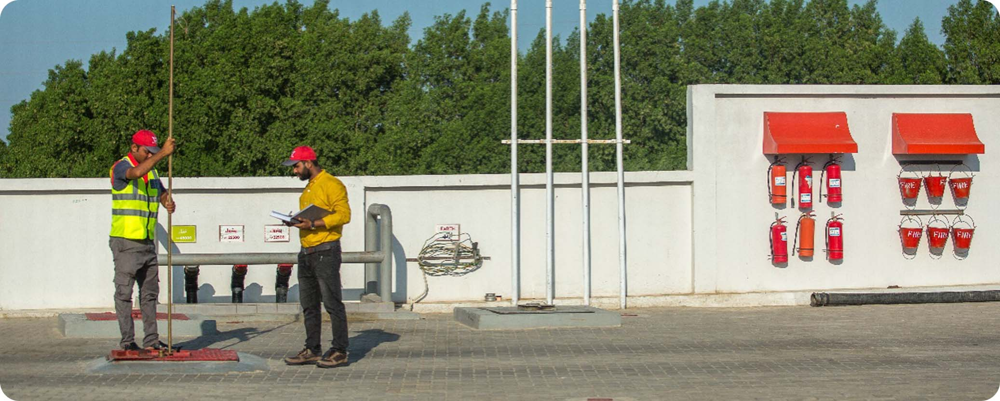

CASH CYCLE AT A RETAIL FUEL STATION:
KEY ACTIVITIES:
WORKING CAPITAL:
Consistent product availability at all times is a fundamental promise to our customers and critical to success of any Fuel Retail Station. Working capital required is based on the following factors:
- Daily sales of the Retail Station
- Minimum stock cover requirement of 3 days
- Distance from TGPL depot and transit time
- Credit Sale and recovery time period
- Seasonal demand hikes
- Banking operations in the area
MINIMUM WORKING CAPITAL REQUIRED:
ADDITIONAL WORKING CAPITAL REQUIREMENT:
PAYMENTS FROM CUSTOMERS:
Efficient and accurate payment processing is a key customer requirement and has a significant impact on Customer Experience. Delays or inaccurate change return can leave a bad impression and negatively impact loyalty of customers.
Assigned cashier in respective locations are responsible for collecting payments from customers
MUST ENSURE:
1- All Cashiers are verified through local Police and guarantor forms are updated
2- Cashiers are trained in Cash Handling and process the payment efficiently without delay and accurately
3- Vehicle number must be entered in POS to maintain customer data, especially Diesel
4- Cashier and Attendants are trained & well versed in handling Card Terminal (TGPL / Bank Card)
5- Cashiers are aware of and trained on common Fraud activities including fake note, etc
6- Fake currency detection machine is recommended to be available
COMMON CASH THEFTS & HOW THEY WORK?
Consistent product availability at all times is a fundamental promise to our customers and critical to success of any Fuel Retail Station. Working capital required is based on the following factors:
TPLG CARD PAYMENT:
Company offers fuel cards to customers for ease of payment. When a customer pays for product purchase
through Taj Card, customer’s account is charged for it and the Retail Station is refunded the amount
as per predefined frequency.
Retailer and Site Manager must ensure that:
- Staff is trained on processing Taj Fleet Card payment
- Staff do not ask Customer for PIN, instead hand over the
device for entering PIN
- PIN is entered by the customer in an area which is covered
by CCTV
- Verify Vehicle number on the Card vs actual Vehicle
- Settlement must be done on daily basis to ensure
timely reimbursement
- Do not hand over cash in lieu of Fleet Card payment. Strict
action will be taken in case such activity is discovered
TGPL Fleet Card Payment will be reimbursed every Tuesday and Saturday into
the Retail Station’s TGPL Ledger.

DEBIT & CREDIT CARD:
Taj Gasoline has entered into partnership with prominent banks of Pakistan for deployment of POS terminals at Retail Station at preferred service charges.
Each Card transaction is charged a service fee which is a percentage of total charge amount
+ Federal Excise Duty. This percentage may vary from time to time in line with the prevailing bank rates. The service charge is shared between TGPL & Retail Station as per the agreement.
RETAILER & SITE MANAGER MUST ENSURE:
- Cash against Card swiping is prohibited as this results in financial loss to both Retailer & TGPL
- Designate a point on the forecourt for customers to park their vehicle while the card transaction
processed so that entry & exit to the site is not disturbed
- Traffic flow is managed by asking the customer to move vehicle away from fueling point to the
designated point
- Daily settlement is done to ensure timely reimbursement to the Retail Station
HOW TO DEPLOY A CARD TERMINAL
SETTLEMENT PROCESS:
TO PREVENT ILLEGAL USE OF CARDS:
- Monitor Card sales for unusual sequences
- Monitor employee practices in completing card sales using CCTV
- Check customer’s name; two or more daily invoices for the same customer might indicate
fraudulent use of card
INVOICES:
All customers must be provided digital receipts generated from the POS system installed at the site at
inception. This helps demonstrate transparency and avoids doubts in the mind of customers.
TGPL has a specifically designed receipt for Diesel and Lubricant sales. This must be procured from
Company Approved vendors.
PMG customers are provided receipt out of thermal printer and only standard thermal printer rolls
are required.
CASH SECURITY DURING SHIFT:
CASH AT FORECOURT:
In order to avoid loss of cash during drive by theft, following till limits are mandatory:
- Cash must not be visible to customers or passer-by and should not be displayed / held in hand.
- Any excess cash must be transferred to underground cash safe.
- Any cashier found with excess cash will be penalized by deduction of 30 points from scorecard.

CASH IN UNDERGROUND SAFE:
Site must have a secure cash room which is accessible only to authorized personnel. Cash room should not have any windows and only one entrance protected by a metal door.
No employee will be allowed to enter in cash room, unless for cleaning in the presence of
site manager or present cashier.
Site Manager and cashier will be allowed to enter cash room only for cash counting, collection for payment or banking.
Cash room will be locked at every time, unless for cleaning or cash counting, collection or banking. Responsibility of cash room will be on Site manager and cashier.
Underground locker keys must be remains at present cashier and site manager.
Manager and cashier must not hand over locker keys to other than designated person in
any circumstance.
Detailed instruction on use of Cash Safe can be found in HSSE chapter.
SHIFT CLOSING:
Cashier is key custodian of cash generated during the business day. As shift changes for cashier and other cashier takes charge, there has to be proper and documented handing and taking over activity between incoming and outgoing cashiers.
Any concerns during handing and taking over must be immediately reported to Retailer & Site Manager.
Charge book is central tool for this daily and essential work. Each business day being closed on charge book is signed off by both cashier performing handing and taking over.
BUSINESS DAY CLOSING:
DISPENSER METER READINGS:
Opening and closing reading of each nozzle on each side of all active dispensers is recorded at shift opening
and shift closing. Difference in reading is sale volume generated from each active nozzle. Dispenser meter readings
should match with amount of POS, card and any other
transactions. If there are any product tests, those should be accounted as per procedure.
READING THE ELECTRONIC TOTALIZER:
DIP ACTIVITY:
Dip activity is performed for each of the underground tanks at station in order to gauge level of available stocks in
there. Only authorized personnel can perform this critical task on daily basis with approved dip chart and dip rod.

DAILY BUSINESS REPORT:
Standardized Daily Business Report is provided by TGPL. This covers all aspect of site’s financial
operations including:
- Sales as per Digital & Analog Meter
- Sales Proceeds
- Credit & Card Sales
- Discount given
- Expense details for the day & month
- Gain / Loss for the Day and Trend for the month
- Bank Deposit & Payment to TGPL
- Running TGPL Ledger
Site Manager is responsible for making the Daily Business Report and sharing with
Retailer and TGPL Head Office before 8:30 am every day.
CASH TRANSFER TO BANK:
For cash transfer to bank, services from a reliable third party are preferable wherever such
services are available.
Keep security foolproof when cash transit vans arrives to take cash from station.
If there are no such services available, cash should be transferred to bank via car with authorized
personnel. Motorcycle, rickshaw, etc. are not allowed. If there is large amount of cash, cash should
be transferred to bank in multiple drops with maximum limit of PKR 500,000.
If possible, different secure routes and different timings should be followed in order to avoid
being noticed.
Cash insurance should be done for cash at station and cash in transit to bank.
Total daily cash must be deposited to the Bank Account. This allows for accurate reconciliation of daily sales
receipts vs bank deposits. Once deposited into the bank account, the payment can then be made to Retail Station’s
TGPL account using HBL CMD facility (details in
Stock Management chapter)
Detailed guidelines on Cash Transfer to Bank can be found in HSSE Chapter.
SURPIRSE CASH CLOSING:
Surprise cash closing is a key tool which can be used to identify any cash shortfall during the day.
Process for Surprise Cash Closing is as follows:
1- Calculate the Total Sale Proceeds:
(a) Take Meter reading for all nozzles
(b) Compare vs Morning Shift opening nozzle reading to calculate sale till the time
of surprise cash closing
2- Count cash available:
(a) Count cash available with Cashier
(b) Count cash available in the underground safe
3- Calculate Credit Sales & Cash Sales:
(a) Calculate expenses paid through cash since start of shift
(b) Calculate credit card & fleet card sales since the start of shift
(c) Calculate credit sales since the start of shift
4- Calculate Cash that Should be Available:
Total Sales Proceeds (A) – (Credit Sales + Card Sales + Expenses) (C)
5- Cash Excess / (Short) = ( C ) – ( B )
AUDIT:
It is recommended that independent audit is conducted at all Retail Stations minimum once a
quarter. This should include:
1- Financial reconciliation
2- TGPL Ledger reconciliation
3- Operational Audit
4- Stock Audit including Fuels, Lubricants, housekeeping material, stationary
5- Adherence to TGPL standards
6- Book keeping & record keeping
7- Equipment upkeep and maintenance
8- Staff management practices including hiring, performance management,
employee record, Attendance, etc
9- Genset consumption
10-Site regulatory documents & permits
TGPL LEDGER:
All payments to TGPL and invoices can be reconciled from the Customer Portal.
1- Log in to Taj Customer Portal using the Retail Station’s Login & Password
2- Click on Customer Transaction
2
It is recommended to reconcile & verify all payments and invoices in TGPL ledger on weekly basis.